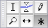
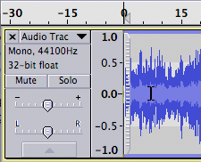
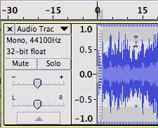
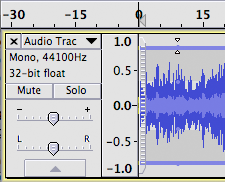
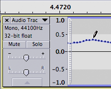
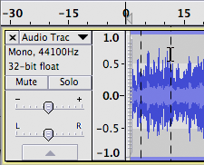
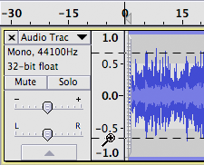
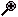
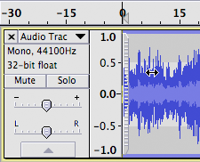
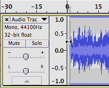

Multi-Tool
From Audacity Manual
Multi-Tool mode on the Tools Toolbar lets you access all five tools on this toolbar at once, depending on the location of the mouse and the modifier keys you are holding down.
- 
To use Multi-Tool Mode, click the  button on the Tools Toolbar or press F6 on the keyboard.
button on the Tools Toolbar or press F6 on the keyboard.
Multi-Tool Mode automatically selects one of the five tools on the Tools Toolbar according to mouse moves and key presses. The mouse pointer changes to show which of its functions is currently available (the pointer will appear similar to the button for the relevant tool on the toolbar).
- Selection Tool is available when the mouse is in an area that does not trigger the Envelope Tool or the Time Shift Tool. The pointer will appear as
 . See Selecting Audio with the Mouse for more details.
. See Selecting Audio with the Mouse for more details.
 Click to position the cursor Drag to select a region
- Envelope Tool is made available by hovering the mouse pointer over the waveform either on the blue horizontal envelope boundary or at half the distance of the envelope boundary to the center line. The pointer then changes to . Click and drag with the mouse and then use envelope tool as you would use the standalone Envelope Tool.
{kind=link}
  You can drag from the half-way point You can drag from the envelope boundary
- Draw Tool is made available by zooming in until you can see individual samples then hovering the mouse pointer close to the line joining the samples. The pointer then changes to a pencil and you can use it as you would use the standalone Draw Tool.

- Zoom Tool
 For horizontal scale zooming right-click (CTRL + click on a Mac) the mouse at a point to zoom out, or right-click, drag and release to zoom in to a drag-selected region. The illustration at left shows a right-click drag.  For vertical scale zooming hover the mouse pointer over the vertical ruler to left of the waveform and the pointer changes to . Hold Shift and left-click (or use unmodified right-click) to zoom out progressively. Hold Shift and right-click to zoom out and return to normal zoom level in one step. Left-click to zoom in by a factor of 2, centered on the click point. You can also left-click, drag and release to zoom into a drag-selected region. The illustration at left shows a left-click drag.
- Time Shift Tool
 To shift an individual clip, hold down CTRL (COMMAND on Mac) while over one of the clips. The pointer will change to the Time Shift tool  . Then drag left or right with the mouse. You may also drag a clip that is fully under a drag bar by hovering over the bar, then drag when the Time Shift pointer appears.
. Then drag left or right with the mouse. You may also drag a clip that is fully under a drag bar by hovering over the bar, then drag when the Time Shift pointer appears.
 To shift an entire track hover over one of the drag bars at the left or right edge of the waveform. The pointer will change to . Then drag left or right with the mouse.
If the audio in the track is not fully under a drag bar, or if the track contains multiple clips, you must hold down while dragging from the drag bar to move the entire audio of the track.